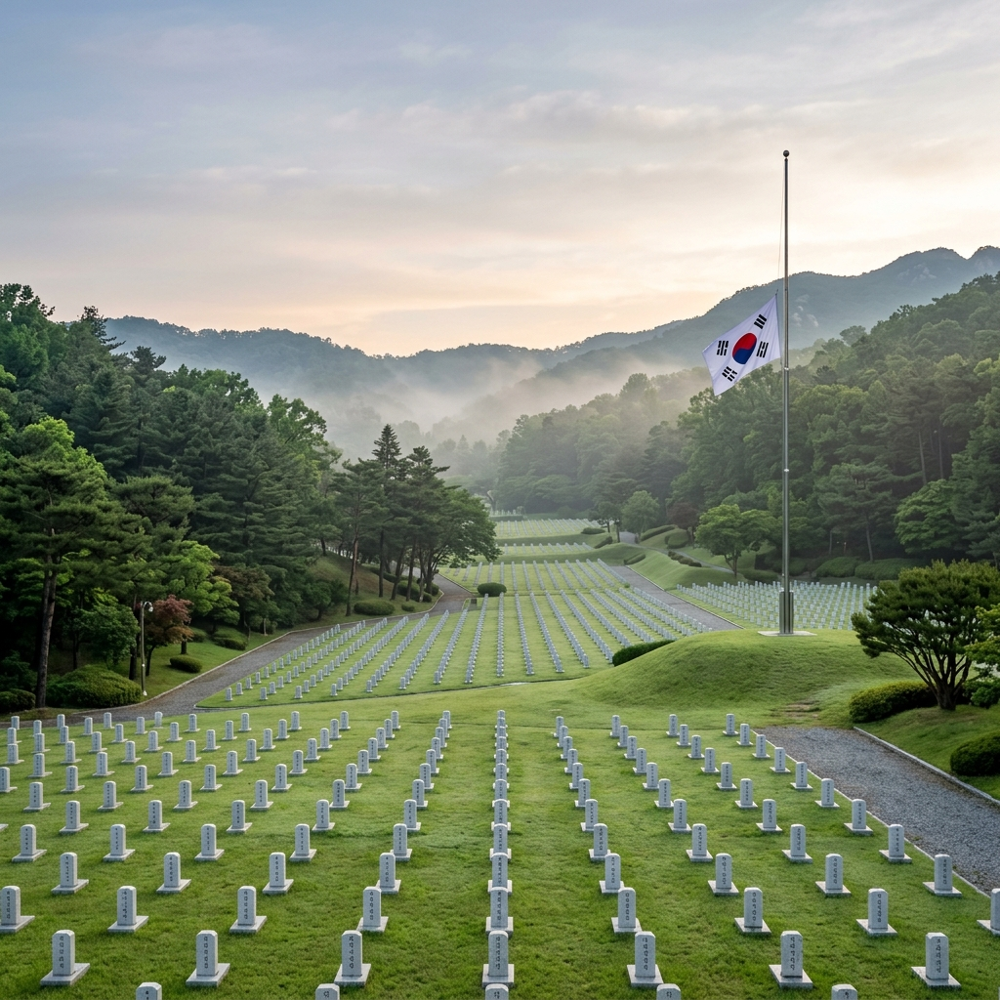
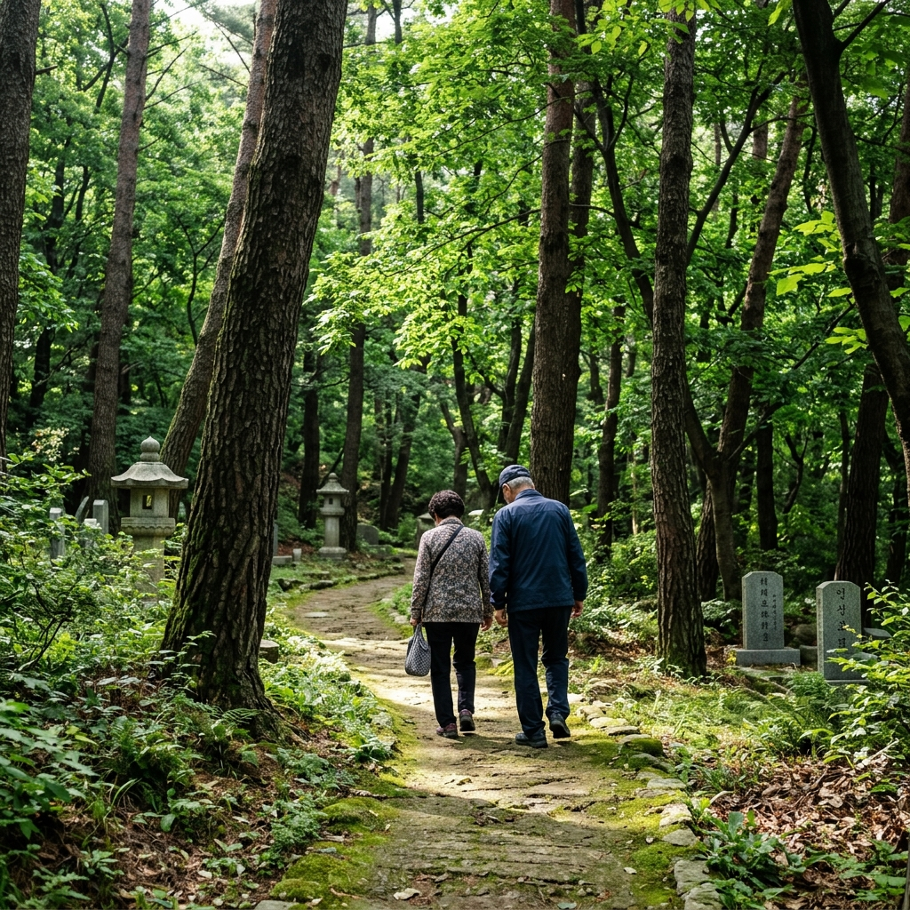

국립서울현충원 현충일 2026 — 6월 6일 추념식과 도심 속 자연 산책로, 동작구 연계 코스
국립서울현충원은 서울 동작구 동작동에 위치한 대한민국의 대표 국립묘지입니다. 총 면적 약 43만 평의 광활한 부지에 순국선열, 애국지사, 전몰장병, 국가유공자를 비롯한 수십만 명이 영면해 있습니다. 2026년 6월 6일은 현충일(顯忠日)로, 이 날 국립서울현충원에서는 순국선열과 호국영령의 숭고한 희생을 기리는 추념식이 거행됩니다. 그러나 현충원은 단순한 추모의 공간에 그치지 않습니다. 서울 도심 한복판에서 만날 수 있는 43만 평의 푸른 자연, 잘 가꿔진 산책로, 그리고 현충원이 품은 역사 이야기까지 — 6월 방문 완전 가이드를 안내해 드립니다.
🎗️ 2026년 현충일 추념식 — 일시·장소·진행 순서
2026년 제70회 현충일 추념식은 6월 6일(토) 오전 10시에 국립서울현충원 현충문 앞 광장에서 거행됩니다. 국가보훈부 주관으로 열리는 이 행사는 대통령과 각 부처 장관, 국회의원, 각군 장성, 보훈 단체 대표 등이 참석하며 전국에 생중계됩니다.
추념식 순서는 국민의례로 시작하여, 헌화 및 분향, 대통령 추념사, 순국선열 호명, 추모 합창 순으로 진행됩니다. 특히 오전 10시 정각에는 전국 일제히 1분간의 묵념이 시행되며, 이 시간에는 서울 도심에서도 사이렌 소리가 울려 퍼집니다.
일반 시민의 현충원 참배는 행사 전후로 모두 가능하며, 방문 시 음식물 반입이나 지나치게 밝은 색상의 복장 착용은 예의상 삼가는 것이 좋습니다. 매년 현충일에는 오전 이른 시간부터 대규모 인파가 방문하므로, 추념식 전 오전 7~8시 이전이나 추념식 종료 후 오후에 방문하는 것이 더 조용하고 경건하게 참배할 수 있는 시간대입니다.

국립서울현충원 — 새벽빛 속 정갈한 묘역과 태극기 / AI 제작 이미지
🏛️ 국립서울현충원의 역사 — 1955년 창설부터 오늘까지
국립서울현충원은 6·25전쟁이 끝난 직후인 1955년 7월 15일 '국군묘지'라는 이름으로 창설되었습니다. 이후 1965년 '국립묘지'로 개칭되고, 2006년 현재의 '국립서울현충원'으로 명칭이 변경되었습니다. 1970년에는 박정희 전 대통령의 지시로 대대적인 묘지 정비가 이루어졌으며, 전통 조경 기법을 도입해 자연과 추모 공간이 조화를 이루는 현재의 형태가 완성되었습니다.
현재 국립서울현충원에는 약 16만 위의 영령이 안장되어 있으며, 순국선열 묘역, 장군 묘역, 장교 묘역, 사병 묘역, 애국지사 묘역 등으로 구분되어 있습니다. 윤봉길 의사, 이봉창 의사 등 독립운동가부터 현대의 국가유공자까지 각 시대의 영령들이 함께 안장되어 있습니다.
전직 대통령 묘역에는 박정희 전 대통령과 김대중 전 대통령 묘소가 있어 현충원을 방문한 많은 분들이 참배를 드리러 방문하기도 합니다.
🌳 현충원 산책로 — 43만 평 도심 숲의 6월 풍경
현충원 방문에서 많은 분들이 놓치는 것이 바로 산책로입니다. 43만 평에 달하는 현충원 부지는 서울 도심 한복판에서 만날 수 있는 최대 규모의 녹지 공간 중 하나입니다. 묘역 사이사이로 조성된 산책로는 소나무·느티나무·벚나무 등 다양한 수종이 어우러져 여름에도 서늘한 그늘을 제공합니다.
6월이 되면 현충원 내 수목들이 짙은 녹음을 이루며, 이른 아침에는 새소리가 요란하게 들려와 도심임을 잊게 만듭니다. 묘역 동쪽 언덕부터 충혼당 방향으로 이어지는 산책로는 한강 방향의 탁 트인 전망과 함께 사계절 모두 아름다운 현충원 내 숨은 명소입니다.
매년 4월에는 벚꽃이, 6월에는 짙은 신록이, 10월에는 단풍이 현충원을 물들입니다. 특히 6월의 현충원은 비교적 한산하여, 새벽 이른 시간이나 평일 오전에는 수십만 위의 영령과 함께 조용히 걷는 고즈넉한 산책을 즐길 수 있습니다.

현충원 내 산책로 — 6월 짙은 신록 속 고요한 추모 산책길 / AI 제작 이미지
ℹ️ 참배 안내 — 개방 시간·교통·주의사항
| 구분 |
내용 |
| 주소 |
서울특별시 동작구 동작동 산 41-2 |
| 참배 시간 |
오전 06:00 ~ 오후 18:00 (연중무휴, 무료) |
| 현충일 추념식 |
2026년 6월 6일(토) 오전 10:00, 현충문 앞 광장 |
| 지하철 |
9호선 국립현충원역 1번 출구 (도보 5분) / 4호선 동작역 환승 연결 |
| 자가용 주차 |
현충원 내 무료 주차장 (현충일 당일 혼잡, 대중교통 권장) |
| 복장 |
단정하고 절제된 복장 권장 (지나치게 화려한 색상 자제) |
🗺️ 동작구 연계 코스 — 현충원에서 노량진·흑석동까지
현충원 방문 후 동작구 일대를 연계한 나들이 코스로 하루를 더욱 알차게 보낼 수 있습니다.
① 노량진 수산시장: 현충원에서 도보 및 지하철 10분 거리. 제철 수산물을 현장에서 회로 즐기는 서울의 대표 먹거리 명소입니다. 6월에는 갑오징어·민어·농어 등이 제철입니다.
② 한강 노들섬: 현충원에서 차로 10분 거리. 노들섬은 한강 한가운데 섬에 조성된 복합 문화 공간으로, 6월에는 야외 음악회와 마켓이 주말마다 열립니다. 탁 트인 한강 전망과 함께 저녁 노을을 감상하기 좋습니다.
③ 흑석동 카페 거리: 중앙대학교 인근 흑석동은 최근 젊은 감성의 카페와 레스토랑이 밀집해 동작구의 새로운 핫스팟으로 부상 중입니다. 현충원 참배 후 가볍게 들러 여정을 마무리하기 좋은 곳입니다.
📚 현충원에서 꼭 들러야 할 시설들
현충원 경내에는 단순한 묘역 외에도 방문객들이 참관할 수 있는 의미 있는 시설들이 있습니다.
현충관(顯忠館): 현충원의 역사와 안장자 정보를 전시하는 기념관으로, 전쟁의 역사부터 국립묘지 창설 과정까지의 기록을 무료로 관람할 수 있습니다. 어린이와 청소년에게 훌륭한 역사 교육 현장이 됩니다.
호국지장사(護國地藏寺): 현충원 경내에 위치한 사찰로, 영령들의 안녕을 기원하는 기도가 이어지는 곳입니다. 작지만 고즈넉한 분위기가 인상적이며, 참배객이 편하게 잠시 머물 수 있습니다.
이충무공동상: 현충원 입구 광장에 세워진 이순신 장군 동상은 현충원을 상징하는 랜드마크로, 방문 기념 사진을 남기기 좋은 장소이기도 합니다.
노량진 수산시장 — 현충원 방문 후 동작구 연계 한강변 먹거리 코스 / AI 제작 이미지
💡 현충일 방문 시 꼭 지켜야 할 예절
현충원 방문은 단순한 관광이 아닌 추모의 행위입니다. 방문하실 때 다음의 예절을 꼭 지켜주시기 바랍니다.
묵념과 경례: 묘역 앞에서는 자연스럽게 묵념하거나 가볍게 고개를 숙여 경의를 표합니다. 어린이가 동행할 경우, 이 행동의 의미를 미리 설명해 주는 것이 바람직합니다.
소음 자제: 음악을 크게 틀거나 큰 소리로 대화하는 행위는 다른 방문객과 영령에 대한 실례입니다. 조용하고 경건한 자세를 유지해 주세요.
촬영 에티켓: 전체적인 경관 촬영은 가능하나, 특정 묘비 가까이에서 고인의 이름이나 개인 정보를 클로즈업 촬영하는 행위는 삼가 주시기 바랍니다.
#현충일2026
#국립서울현충원
#현충일추념식
#6월6일
#호국보훈의달
#동작구여행
#서울산책
#노량진수산시장
#국립묘지
#서울여행